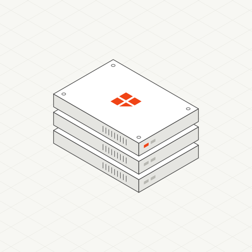

<!doctype html>
<html lang="en">
<meta charset="utf-8">
<meta name="viewport" content="width=device-width, initial-scale=1">
<title>Server Stack Preview</title>
<style>
  :root { --bg: #F7F7F3; --ink: #454545; --muted: #8a8a84; --line: #E5E5E1; }
  body { margin: 0; background: var(--bg); color: var(--ink); font: 14px/1.5 system-ui, sans-serif; }
  main { max-width: 1100px; margin: 0 auto; padding: 32px 16px; }
  h1 { font-size: 18px; font-weight: 600; margin: 0 0 4px; }
  p { margin: 0 0 24px; color: var(--muted); }
  .grid { display: grid; grid-template-columns: repeat(auto-fit, minmax(300px, 1fr)); gap: 16px; }
  figure { margin: 0; border: 1px solid var(--line); background: #fff; }
  figure img { display: block; width: 100%; height: auto; }
  .checker { background: repeating-conic-gradient(#f0f0ec 0 25%, #fff 0 50%) 0 0 / 16px 16px; }
  figcaption { padding: 8px 12px; font-size: 12px; color: var(--muted); border-top: 1px solid var(--line); }
</style>
<main>
  <h1>Concept 001: Server stack (home)</h1>
  <p>Generated SVGs from <code>npm run build</code>.</p>
  <div class="grid">
    <figure><figcaption>Off-white with grid</figcaption></figure>
    <figure class="checker"><figcaption>Transparent</figcaption></figure>
  </div>
</main>
</html>
